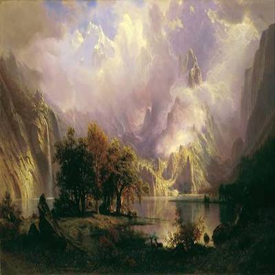

|
|  |
Albert Bierstadt (January 7, 1830 – February 18, 1902) was a German-American painter best known for his lavish, sweeping landscapes of the American West. To paint the scenes, Bierstadt joined several journeys of the Westward Expansion. Though not the first artist to record these sites, Bierstadt was the foremost painter of these scenes for the remainder of the 19th century. Born in Prussia, Bierstadt was brought to the United States at the age of one by his parents. He later returned to study painting for several years in Düsseldorf. He became part of the Hudson River School in New York, an informal group of like-minded painters who started painting along the Hudson River. Their style was based on carefully detailed paintings with romantic, almost glowing lighting, sometimes called luminism. An important interpreter of the western landscape, Bierstadt, along with Thomas Moran, is also grouped with the Rocky Mountain School.